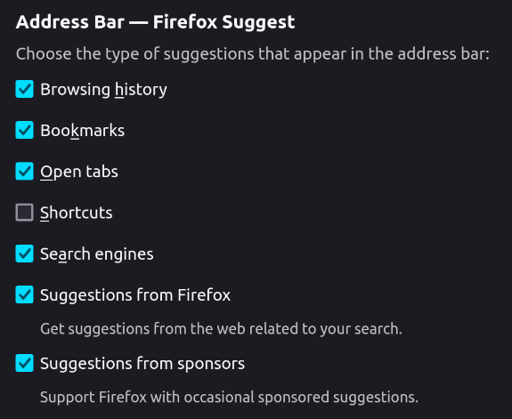
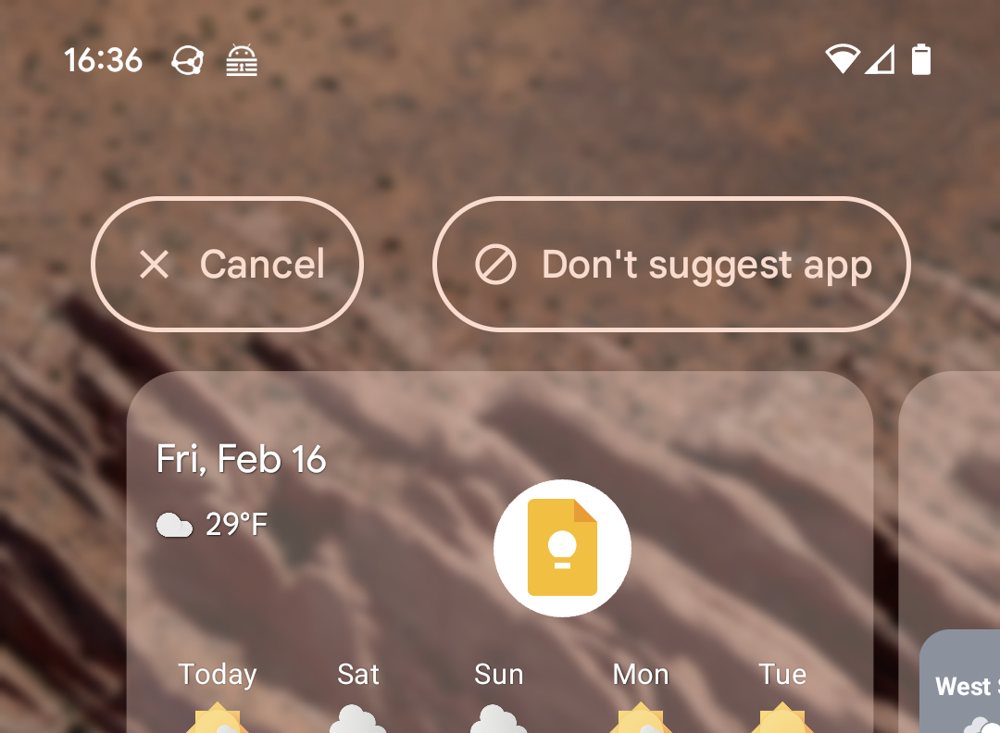

About halfway through January I decided to spend less time on social media. Specifically I decided to do less scrolling. I wanted my media consumption to be more deliberate.
I decided that I would no longer use Reddit unless I went to a specific post from a search. Also, no more Instagram. Youtube is okay, but I'd use the Subscriptions feed only.
I had just listened to season 2 of Things Fall Apart and the episode of Fresh Air with Kyle Chayka, author of Filterworld. A theme of Things Fall Apart is that misinformation spread on social media, making a problem worse than it should have been. And Kyle Chayka's assertion is that social media feeds limit the content we see.
I learned that I was being suggested Reddit and Instagram in ways I hadn't realized. Going to Reddit was a reflex when I clicked on Firefox's address bar. By default Firefox has a number of suggestion sources. I wanted to disable the suggestions that appear before you start typing—and you can, by unchecking "Shortcuts" in the Address Bar settings.
Instagram was also suggested to me, this time by Android. Android will put recently opened apps at the top of the app grid. I like this for some apps, but not those that waste time. You can exclude specific apps by dragging them from the top row to "Don't suggest app" at the top of the screen.
A few other things I did: I subscribed for paper copies of Skate Jawn and Thrasher. I set up a Tiny Tiny RSS server, and I subscribed to a number of skateboarding- and news-related feeds. That's right, RSS, which I haven't used since shortly after Google Reader shut down in 2013.
So how are things going now? Pretty well I think. I bookmarked Youtube's Subscriptions page; now I go to it directly, so I spend less time scrolling there. I haven't loaded up Reddit in weeks, though initially I did through habit several times. I do open Instagram often, but I remind myself not to scroll past 2 or 3 posts.
Like I said, I still use Instagram. Some content is available only on social media. If I want to see updates from my favorite indoor skatepark or local skateshops, I have to use Instagram. Or possibly Facebook, but that's even worse.